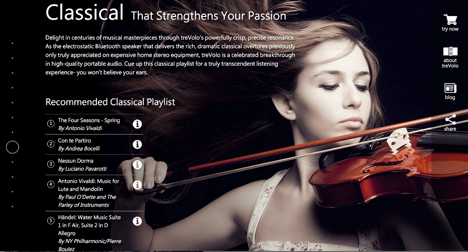
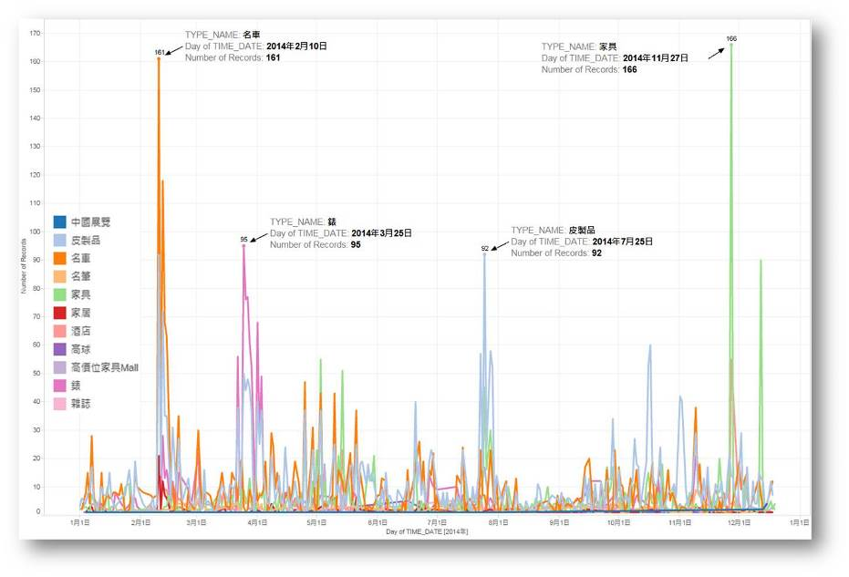
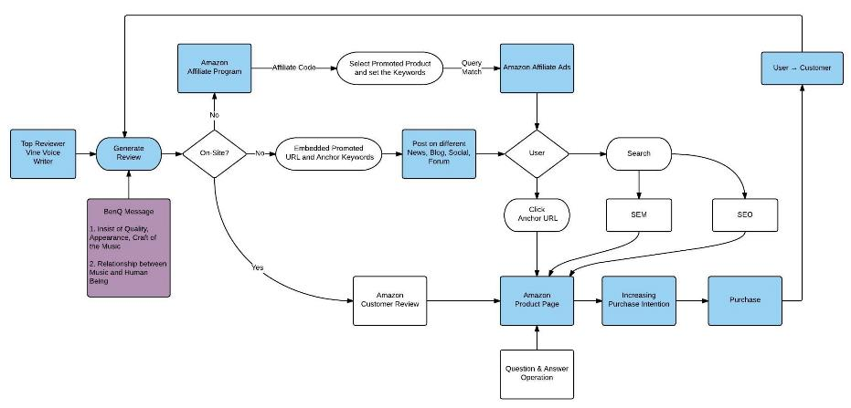

During my professional career of more than 5 years, I've gained valuable experience in marketing websites by search engine optimization, driving traffic strategy and social media marketing and analysis. I've managed projects from conception to production independently as well as in a team, defining the scope, project plans, prioritizing work. I’ve analyzed and reported on marketing campaigns across multiple channels (including Display, Search, Affiliates, Comparison Shopping, Social Media, E-mail Marketing, Retargeting, eCommerce, On-site and Off-site Campaigns), consolidating data from internal and external sources to support the decision process and optimize the results.
National Cheng Kung University
Northeastern University
Providence University
BenQ Corporation
Tencent Holdings Limited
Institute for Information Industry
National Cheng Kung University Hospital
Institute for Information Industry
TAAI
Institute for Information Industry
Institute for Information Industry
Institute for Information Industry
Institute for Information Industry

Landing Page - Traffic Tracking

Share of Voice Analysis

Traffic Driving in Amazon
Modified by Mark Wu | Theme by BLACKTIE.CO